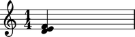
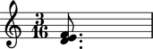
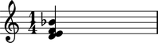
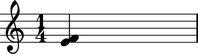
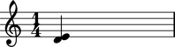

Working with chords
Chord initialization
Initialize Chord with a list of Pitch instances and a Rational.
abjad> chord = Chord([Pitch(2), Pitch(4), Pitch(5)], Rational(1, 4))
You can use a notehead token list as shortcut for the first input parameter. And you can use a duration token as a shortcut for the second.
Duration attributes
Chord has a _LeafDurationInterface.
abjad> tuplet = FixedDurationTuplet((1, 4), Chord([2, 4, 5], (1, 8)) * 3) abjad> chord = tuplet[1] abjad> chord.duration <_LeafDurationInterface>
_LeafDurationInterface bundles six public attributes.
abjad> chord.duration.multiplied Rational(1, 8)
abjad> chord.duration.multiplier Rational(1, 1)
abjad> chord.duration.preprolated Rational(1, 8)
abjad> chord.duration.prolated Rational(1, 12)
abjad> chord.duration.prolation Rational(2, 3)
abjad> chord.duration.written Rational(1, 8)
Read more at _LeafDurationInterface.
Duration attribute assignment
You can reassign chord.duration.written.
abjad> chord = Chord([2, 4, 5], (1, 4))
abjad> chord.duration.written = Rational(3, 16)
You must use a Rational which meets assignability criteria.
You can also assign chord.duration.multiplier.
abjad> chord = Chord([2, 4, 5], (1, 4)) abjad> chord.duration.multiplier = Rational(1, 6)
abjad> chord.duration.written Rational(1, 4) abjad> chord.duration.multiplier Rational(1, 6) abjad> chord.duration.multiplied Rational(1, 24)
Use any positive Rational.
All other duration attributes are read-only.
Chord length
Chord implements len( ) as the number of noteheads in self.
abjad> chord = Chord([2, 4, 5], (1, 4)) abjad> len(chord) 3
Adding noteheads
Chord implements bound append( ) and extend( ) methods to mimic the built-in Python list.
Use append( ) to add one notehead.
abjad> chord = Chord([2, 4, 5], (1, 4)) abjad> chord.append(10)
Use extend( ) to add a list of noteheads.
abjad> chord = Chord([2, 4, 5], (1, 4)) abjad> chord.extend([10, 12])
Any notehead token will do.
TODO: why isn't _NoteHead public? Shouldn't it be possible to instantiate a _NoteHead by hand and then assign to a chord with append or extend? This would mean extending append and extend somewhat but would increase composer interface consistency.
Removing noteheads
Chord implements remove( ) and pop( ) methods to mirror the interface of the built-in Python list.
The remove( ) method works by notehead reference.
abjad> chord = Chord([2, 4, 5], (1, 4)) abjad> chord.remove(chord[0])
The pop( ) method works by zero-indexed integer. Negative indices are allowed.
abjad> chord = Chord([2, 4, 5], (1, 4)) abjad> chord.pop(-1)
Note that pop( ) defaults to -1.
Listing noteheads
Chord gives all noteheads as a list.
abjad> chord = Chord([2, 4, 5], (1, 4)) abjad> chord.notheads [_NoteHead(d'), _NoteHead(e'), _NoteHead(f')]
It is always the case that len(chord) == len(chord.noteheads).
Note that chord.noteheads.remove(chord[0]), for example, does nothing because Chord generates noteheads as a newly instantiated list on each request. Use chord.remove(chord[0]) instead.
Listing pitches
Chord gives all pitches as a list.
abjad> chord = Chord([2, 4, 5], (1, 4)) abjad> chord.pitches [Pitch(d, 4), Pitch(e, 4), Pitch(f, 4)]
It is always the case that len(chord) == len(chord.pitches).
Note that chord.pitches.remove(chord[0].pitch), for example, does nothing. Use chord.remove(chord[0]) instead.
Grob handling
Chord is not a LilyPond grob handler because there is no LilyPond chord grob. This means that assignments such as, for example, chord.color = 'red' carry no special meaning in Abjad.
Note, however, that, because there is a LilyPond notehead grob, the Abjad _NoteHead does act as a grob handler.
abjad> chord = Chord([2, 4, 5], (1, 4)) abjad> notehead = chord[0] abjad> notehead.color = 'red' abjad> f(chord) < \tweak #'color #red d' e' f' >4
This is a handy feature that shows a uniform Abjad syntax neatly covering an usual bit of LilyPond syntax.
Chord comparison
When are two chords 'equal'? When are two chords 'the same'? We could argue that two chords are equal when they exhibit the same pitch content. Alternatively, we could insistent on durational equivalence. Or on pitch and durational equivalence. And what about articulations, beams and flags, dynamics, glissandi, slurs and other connectors? Or stem direction? Abjad makes it very easy to compare all of these attributes and more. But it seems unwise to elevate any one or two of these potential types of attribute comparison to the position of canonic chord comparison. For this reason, Abjad admits a large number of chord attribute comparison tests but no chord comparison test proper.
Actually, Abjad does not block the built-in Python cmp( ) function on chords. This means that statements like chord1 == chord2 will evaluate to either true or false. More specifically, two chords will compare as true if and only if the chords share a single reference in the interpreter, ie, id(chord1) == id(chord2). This type of comparison is fundamentally nonsemantic and, in fact, begs the question of whether Chord and, indeed, all Abjad components should block Python comparison explicitly. This seems to be especially the case when we consider that expressions like chord1 > chord2 and chord1 < chord2 do unfortunately evaluate in the current implementation. The value of greater-than / less-than comparison on Chord is highly conterintuitive and should qualify as a problem in the model.
TODO: these changes are DONE in the current commit. _Component now blocks Python comparison explicitly with the important exception of __eq__ and __ne__ which are now implemented as ID-comparison only. This allows, for example, chord1 == chord2 for list.index( ) to work while blocking chord1 > chord2 and chord1 < chord2 explicitly. Leave for a couple of days and then adjust this part of the docs in the preceding paragraph to reflect these changes.
Abjad allows the instantiation of empty chords with
Chord([ ], (1, 4))and the like. Consider this an undocumented behavior that may deprecate in future.